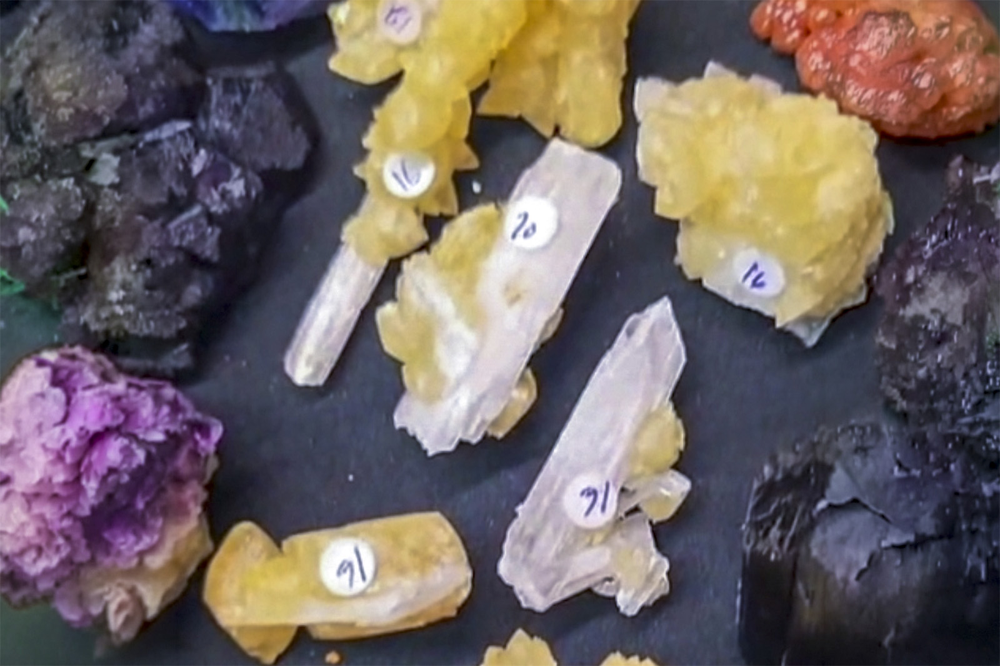

Calcite on Celestine Blades
"Calcite on Celestine 03"
III-10895
Clay Center, Allen Township, Ottawa County, Ohio, USA
Mined by Stan
Purchased 8/23/2026 from Virgo Gems for $18.75 (Inventory)
Details
Storage: Flat
Tray: 000 None
Size class: Miniature (39)
Dimensions: 4.8 × 1.6 × 1.0 cm
Mass: 7.23 g
Luster: Above Average, Vitreous